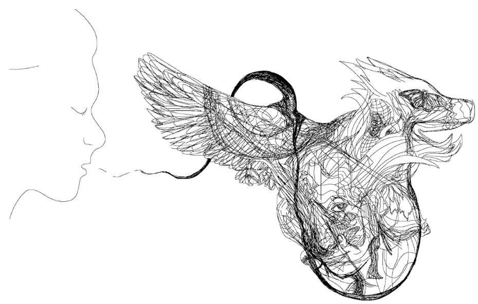

Untitled by Rose Guan ('19)

Inscription by Andrew Rule ('17)
The opposite of archaeology:
lying down where you are
and as you are, not as you wish to be,
and holding still as the stars revolve
and the featherweight of each second
comes to rest on you,
and not brushing it off;
not remembering and not hoping
to be remembered, not asking questions
and not answering them, but watching
for the first time in your life an hour
made of sixty whole minutes
wash around you and wash through you;
feeling the misty film of time
settle on your cheeks like ash
settles on rooftops, like snow
dusts the seat of a stone park bench.